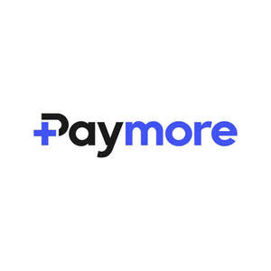

Trade Mark Journal No.2025/045 7 November 2025
UK00004269436 25 September 2025 (9,35,36,38,42)

- Class 9
- Electronic devices and equipment used in the retail sector, namely point-of-sale (POS) terminals for in-store transactions, mobile POS devices, vending machines, kiosks and integrated card readers; contact, contactless and QR reader payment devices, and multi-channel payment hardware; telemetry devices, remote monitoring and control units, data collection modules and communication hardware for vending machines and self-service sales equipment; electronic components for payment equipment, namely barcode scanners, sensors, relay boards, communication boards, modems, antennas and IoT-based connectivity units; electronic devices and hardware for transmitting inventory, sales and maintenance data of vending machines, kiosks and payment terminals to central systems. .
- Class 35
- Business management, business development and commercial consultancy services; business administration services relating to cashless payment systems, POS terminals, vending machines, kiosks and other self-service retail technologies; planning, organisation and optimisation of business processes for retail enterprises and the vending sector; reporting and analysis of sales, stock, customer behaviour and device performance data via SaaS dashboard software; provision of business data analytics and business intelligence services to enable merchants to manage their payment systems, monitor financial performance and support decision-making; administration of campaigns, loyalty schemes, reward points, discount and cashback programmes, and provision of related consultancy services to merchants; in particular business management, analysis and consultancy services relating to snack vending machines, beverage and coffee vending machines, food and drink vending machines, ticket machines, laundry vending machines, car wash stations and electric vehicle charging stations as self-service retail technologies. .
- Class 36
- Electronic payment services; issuance, distribution and management of prepaid cards and electronic money; processing, authorisation and clearing of credit card and debit card transactions; provision of financial transaction services via mobile applications, including loading and spending of electronic money; electronic wallet services (e-wallets), digital balance management, loyalty programme and cashback services; payment gateway services for online and offline transactions, including transaction routing, integration, control, reconciliation and reporting; virtual POS integration, routing and switching services across multiple banks and payment institutions; virtual POS management, settlement and clearing services; dynamic currency conversion (DCC) and multi-currency payment services; closed-loop mobile wallet services, including stored value account solutions, prepaid and gift card management, top-up and redemption services for retail chains and vending networks; financial services enabling users to make payments with offline balances; financial transaction services relating to vending machines, kiosks, point-of-sale (POS) devices and other unattended retail payment systems; multi-channel payment acceptance services for in-store, online, delivery and unattended environments; micropayment financial solutions; subscription and recurring payment services for membership and service models; split payment and revenue sharing financial solutions; provision of financial services enabling account information access, account management and payment initiation through open banking APIs of banks and payment institutions; anti-money laundering (AML) compliance checks, know-your-customer (KYC) verification, regulatory-compliant transaction monitoring, fraud prevention and financial risk management services. .
- Class 38
- Electronic communication and data transmission services; secure transmission of financial transaction data from payment terminals, POS devices, mobile wallet applications, virtual POS systems, vending machines, kiosks and other self-service sales equipment; machine-to-machine (M2M) and Internet of Things (IoT) based connectivity services; transmission of sales, stock, fault and maintenance information from telemetry devices to central software platforms; communication services for cloud-based data transfer and remote device management; provision of data communication over GSM, 4G/5G, Wi-Fi, Ethernet and other wired and wireless protocols; electronic communication services enabling users to perform contact, contactless and QR code payments via mobile devices; secure messaging, encrypted communication and authentication services for financial transactions and user information. .
- Class 42
- Software as a Service (SaaS) for payment processing; providing online non-downloadable software for telemetry and vending machine monitoring; cloud computing services for transaction data processing; API services for integrating payment systems; design and development of financial technology software; design, development and provision of mobile wallet applications enabling contactless and QR code payments; design and development of mobile applications and SaaS software for managing vending machines, kiosks and other self-service sales equipment, including real-time and remote monitoring of sales, stock levels and malfunctions, reporting, remote updates of prices, stock and parameters, as well as remote shutdown, restart and command control of such devices; development of licensed software to ensure compliance of POS terminals with banks, including EMV L2 and L3 certification software; development of integrations with banks and payment institutions for virtual POS, including switch software, fraud prevention rules, transaction prioritisation mechanisms and AI-powered risk management systems; creation of gateway software and SaaS dashboards enabling the management, reconciliation, control and reporting of such virtual POS systems; development of integrations, backend services and mobile applications enabling firms and users to track and manage their bank accounts and perform banking transactions through a single SaaS dashboard and mobile application using open banking APIs of banks and payment institutions; design and development of AI-driven applications for processing open banking data to analyse user financial behaviour, detect and prevent fraud, assess credit and transaction risk, provide behavioural biometric authentication, and deliver personalised financial reports, alerts and recommendations; development of SoftPOS solutions (software turning NFC-enabled smartphones and tablets into POS devices), wearable payment integrations (applications enabling payments via smartwatches, wristbands and similar devices), IoT payment solutions (machine-to-machine payment software), tokenization software for secure conversion of card data, 3D Secure integration software, encryption and end-to-end security protocols, blockchain-based payment software (smart contracts, crypto wallets and digital asset transfer integrations), SuperApp infrastructures (software aggregating multiple payment and financial services into a single application), multi-acquirer and multi-bank switching solutions (routing transactions across different banks and payment providers), settlement and reconciliation software (automatic reconciliation between banks and merchants), dynamic currency conversion (DCC) software, subscription and recurring payment software; PSD2 and open banking compliant integration software, AML (Anti-Money Laundering) monitoring software, KYC (Know Your Customer) solutions, and transaction monitoring software ensuring compliance of high-volume payments with financial regulations; development of POS software, cash register software, ERP integrations, reconciliation software and merchant management software for the retail sector; design and development of mobile applications and SaaS dashboards that allow users in the retail sector (in-store, delivery and self-service machines) to create offline accounts, load and spend balances, while enabling merchants to accept payments, create campaigns, cashback programmes and loyalty schemes; development of kiosk software and SaaS dashboard applications enabling payments via contact, contactless, magnetic cards, mobile wallets and QR codes through kiosk devices; additionally, design and development of AI-powered SaaS systems for sales forecasting, anomaly detection, user behaviour analytics and predictive maintenance of devices. .
Paymore Limited